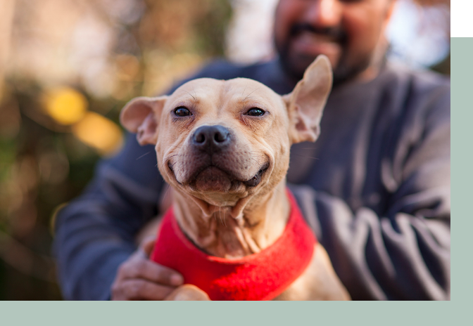

We are a non-profit 501(c)(3) all-volunteer animal welfare group that works in tandem with the City of Jackson Animal Shelter. to find permanent loving homes for the adoption animals, to enhance the quality of life for the shelter animals and to provide spay/neuter services.
PET ADOPTION
ANIMAL CARE
SPAY & NEUTER

OUR STORY
Jackson Animal Shelter located in Jackson, Mississippi is a private 501(c)3 nonprofit corporation dedicated to the extensive care, rehoming, protection and prevention of cruelty to animals. Chartered in 1969, we are the largest full service animal welfare organization in Central Mississippi providing care and basic medical services for thousands of homeless and unwanted animals each year. We do not receive any general operating funds from any state or federal agency.
...
When you support JAS – whether by making a donation, volunteering your time or by spreading the work about the vital work we do- you support our dogs, cats, horses, rabbits, and burros, and the people we also exist to serve. We are a voice for animals who cannot speak for themselves.
MARL is an “open admission” shelter- that means we accept every animal that comes in the door. Other shelters in the area re “limited admission”, meaning they accept a limited, finite number of animals. In our state, it is primarily left to private organizations and city animal control agencies to provide shelter and care for unwanted animals.
One of our key goals is to find loving homes for all animals in our facility. As an “open admission” shelter, we take in on an average of 50-60 animals a day and many more in the spring and summer. Local “limited admission” shelters turn animals away when they are full. We work very hard to provide loving and humane treatment and good homes for each and every animal that comes through our doors. Sadly, we receive more animals than there are homes available. Being an “open admission” shelter, we face the hard reality of animal overpopulation each day.